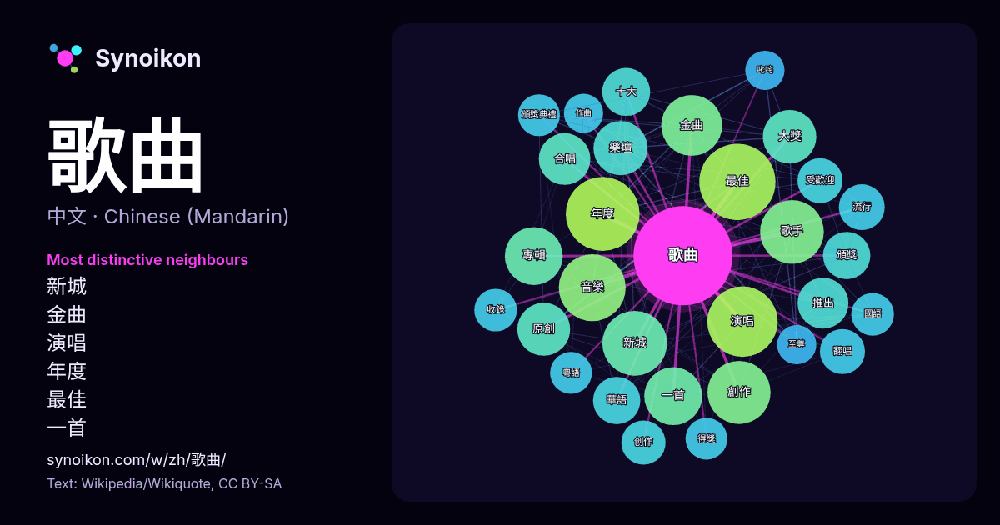

中文 · 每日一词列表
歌曲
“song” · 来自维基百科, Wikiquote 1447 次出现中其周围的词。

最具特色的邻近词
- 新城 51×
- 金曲 48×
- 演唱 46×
- 年度 45×
- 最佳 40×
- 一首 39×
- 樂壇 38×
- 歌手 36×
- 原創 35×
- 大獎 35×
- 創作 34×
- 合唱 33×
- 頒獎 30×
- 華語 29×
- 十大 29×
- 翻唱 27×
- 音樂 26×
- 受歡迎 25×
- 得獎 24×
- 頒獎典禮 24×
× = 比维基百科普通文本中多出的倍数。
最常见的邻近词
- 最佳 83
- 年度 78
- 演唱 71
- 音樂 64
- 新城 60
- 歌手 58
- 創作 57
- 香港 54
- 金曲 53
- 電影 51
- 一首 48
- 專輯 48
- 樂壇 42
- 大獎 41
- 獲得 41
- 包括 40
- 原創 40
- 合唱 38
- 推出 37
- 十大 33
上下文
- 歌曲背后的部分故事，至少可以对这些歌曲有一个大致的了解。 早期的歌曲并不具有现在歌曲所拥有的美学特点，而是服务于各类仪式，满足最基本的实际需求即可。随着时间的推移，歌曲的美学元素被得到重视，并使得歌曲的创作逐渐变成了一种艺术工作。最原始的歌曲，其内容与宗教有有着密切的关系，但这些歌曲 Wikipedia snippets · 歌曲
- 知名度抽样调查中當時劉歡的知名度為87%。1990年，刘欢与韦唯演唱北京亚运会宣传歌曲《亚洲雄风》。2008年受邀演唱北京奥运会主题曲《我和你》。2012年起，他曾擔任兩季《中国好声音》系列导师，以及三季《中国好歌曲》系列導師。2019年参加《歌手2019》，并成为该季歌王。 Wikipedia snippets · 刘欢
- 國語男歌手獎」並獲獎三次，是該獎項的入圍暨得獎紀錄保持者。2016—2021連續六年登上Spotify香港最高串流量歌手榜首。與環球唱片合作19年來歌曲串流播放率破750億。2023及2024年均登上Spotify全球最多串流收聽次數華語歌手第三位；香港最受歡迎本地歌手榜分別為第五及第四位； Wikipedia snippets · 陳奕迅
- Wing-kei，1976年3月25日—），香港女歌手、詞曲作家及演員。曾憑藉主唱《向左走·向右走》電影插曲《迴旋木馬的終端》獲得2003年金馬獎最佳原創電影歌曲。她除了為自己創作多首歌曲（如《花火》、《高妹正傳》等）外，也曾為其他歌手作曲（如李克勤的《高妹》、鄭秀文的《跳傘》、《落錯車》等）。 Wikipedia snippets · 梁詠琪
- 本列表主要介紹台灣歌手周杰倫专辑发行、歌曲信息、派台單曲成績。 1997年，周杰倫因参加TVBS-G电视台选秀节目《超级新人王》获得年度亚军而被当时阿尔发音乐总经理吴宗宪发掘。2000年发行首张同名专辑《Jay》出道，之后除了2009年和2013年、2015年之外，每一年都会发行一张专辑。 Wikipedia snippets · 周杰倫音樂作品列表
- 周深（1992年9月29日—），中國大陸男歌手、音樂製作人，出生於湖南邵陽，成長於貴州貴陽，並畢業於烏克蘭利沃夫國立音樂學院。他在2014年參加《中國好聲音第三季》正式出道，代表歌曲包括《大魚》、《燈火裡的中國》、《小美满》、《光亮》等，以其清亮嗓音、多變聲線及融合美聲與流行的唱法而聞名。 Wikipedia snippets · 周深
- 《皇后大道東》（英語：Queen's Rd. East）是一首香港粵語歌曲，由羅大佑作曲、花比傲編曲、林夕填詞、羅大佑和蔣志光合唱，收錄於1991年的群星專輯《皇后大道東》。歌曲運用多個跟中华人民共和国、英国相關的象徵和隱喻，描繪了香港社會面對1997年主權移交的心態。 Wikipedia snippets · 皇后大道東 (歌曲)
- 六四歌曲，广义上是指与六四事件有关的歌曲。这些歌曲中有些创作于六四之前，创作之初与六四事件并无关联，但在六四事件发生后，人们依据活动的需要曾有传唱，如《一无所有》、《龙的传人》、《人间道》、《血染的风采》、《最后一枪》等，其中《一无所有》成为当时抗议学生的非正式用歌。狭义的六四歌曲是指因当年六四事件而创作的歌曲 Wikipedia snippets · 六四歌曲
更多词
于 2026-10-09 以默认设置预先计算（±5 个词，中等语料）。交互式图可用实时数据刷新。
界面为机器翻译，欢迎指正。